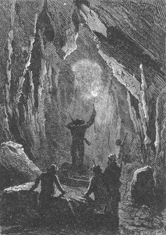
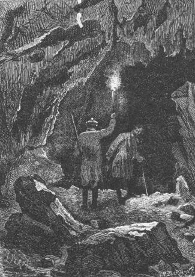
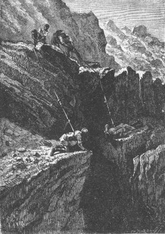

What had happened? Who had struck down the convicts? Was it Ayrton? No, since he had dreaded their return only a moment earlier.
But Ayrton was then in a deep stupor from which it was impossible to rouse him. After the few words that he uttered, an overwhelming torpor took possession of him and he fell back on his bed motionless.
The colonists, prey to a thousand confused thoughts, under the influence of a violent overexcitement, waited all night without leaving Ayrton’s house and without returning to the place where the bodies of the convicts were lying. It was true that Ayrton could tell them nothing about the circumstances under which the convicts had been found dead since he himself did not even know that he was at the corral. But at least he would be able to tell about the events that had preceded this terrible execution.
The next day Ayrton came out of his torpor and his companions heartily gave him evidence of their joy on seeing him again very nearly safe and sound after one hundred four days of separation.
Ayrton then related in a few words what had happened or at least as much as he knew.
The day after his arrival at the corral, the 10th of November last, when night fell, he was surprised by the convicts who had scaled the enclosure. They tied and gagged him; then he was taken away to some obscure cavern at the foot of Mount Franklin where the convicts had taken refuge.
His death had been decided upon and the next day he was about to be killed when one of the convicts recognized him and called him by the name he had borne in Australia. These wretches wanted to massacre Ayrton! They respected Ben Joyce!
But from that time on, Ayrton was exposed to the obsessions of his former accomplices. They wanted him to join with them and they counted on him to get into Granite House, to get into this inaccessible dwelling, in order to become masters of the island after having assassinated the colonists.
Ayrton resisted. The former convict, repentant and pardoned, would have rather died than betray his companions.
Ayrton, tied up, gagged and under constant guard, lived in this cavern for four months.
However, the convicts had discovered the corral a short time after their arrival on the island and from that time on, they used its reserves but without living there. On the 11th of November, two of these bandits, suddenly surprised by the arrival of the colonists, fired on Herbert and one of them returned boasting that he had killed one of the inhabitants of the island, but he returned alone. His companion, as we know, fell under Cyrus Smith’s dagger.
One can judge Ayrton’s despair and anxiety when he learned this news of Herbert’s death! The colonists were only four in number and, so to speak, at the mercy of the convicts!
After this event, and during all of the time that the colonists were detained at the corral by Herbert’s illness, the pirates did not leave their cavern, and even after they had pillaged Grand View Plateau, they did not feel it prudent to abandon it.
The ill treatment inflicted on Ayrton then redoubled. His hands and feet still carried the bloody marks of the bonds which restrained him day and night. He awaited death at any moment, from which it seemed he could not escape.
Things stood this way until the third week in February. The convicts, always on the lookout for a favorable occasion, rarely left their retreat except to hunt either in the interior of the island or on the southern coast. Ayrton no longer had any news of his friends nor did he expect to see them again.
Finally the unfortunate man, weak from ill-treatment, fell into a deep prostration during which he saw nor heard anything. From that time on, that is to say for the last two days, he could not even say what had happened.
“But, Mister Smith,” he added, “since I was imprisoned in this cavern, how do I find myself at the corral?”
“How do we find the convicts lying out there dead in the middle of the enclosure?” replied the engineer.
“Dead!” shouted Ayrton who, in spite of his weakness, got up a bit.
His companions helped him up. He wanted to stand up. They let him do so and everyone went toward the small creek.
It was broad daylight.
There on the bank, in the position in which they had met an instantaneous death, lay the five bodies of the convicts.
Ayrton was dumfounded. Cyrus Smith and his companions looked at him without saying a word.
On a sign from the engineer, Neb and Pencroff examined the bodies already stiff from the cold.
They showed no apparent trace of a wound.
Only after they had been carefully examined, Pencroff saw on the face of one, the chest of another, the back of this one, the shoulder of that one, a small red mark, a sort of barely visible contusion whose origin was impossible to recognize.
“That is how they were struck down!” said Cyrus Smith.
“But with what kind of weapon?” shouted the reporter.
“A weapon, acting like lightning, whose secret we do not have.”
“And who struck them?...” asked Pencroff.
“The judge of the island,” replied Cyrus Smith, “he who brought you here, Ayrton, he whose influence is still felt, he who does for us all that we cannot do for ourselves, and who, when done, conceals himself from us.”
“Let us look for him then,” shouted Pencroff.
“Yes, let us look for him,” replied Cyrus Smith, “but the mysterious being who accomplishes such wonders will not be found until it finally pleases him to call us to his side.”
This invisible protection, which made their own efforts seem like nothing, irritated and moved the engineer at the same time. The relative inferiority that it implied could wound a proud spirit. A generosity which acted so as to elude every mark of recognition indicated a sort of scorn for the debtors which marred up to a certain point, in Cyrus Smith’s view, the value of the kindness.
“Let us search,” he resumed, “and God will it that we be permitted one day to prove to this haughty protector that he is not dealing with ingrates! What I would not give to be able to repay him and to render him some important service in our turn even at the cost of our lives.”
From this day on, this search was the unique preoccupation of the inhabitants of Lincoln Island. Everything impelled them to discover a hint about this enigma, a hint even if it only be the name of the man endowed with this truly inexplicable and superhuman power.
Then the colonists re-entered the house in the corral where their cares promptly restored Ayrton to his moral and physical energy.
Neb and Pencroff carried the bodies of the convicts into the forest at some distance from the corral and buried them.
Ayrton was brought up to date on what had occurred during his imprisonment. He was told about Herbert’s experiences and the series of trials which the colonists had endured. As to the latter, they no longer expected to see Ayrton again and feared that the convicts had massacred him without pity.
“And now,” said Cyrus Smith, ending his recital, “a duty remains for us. Half of our task is completed but if the convicts are no longer to be feared, it is not because of ourselves that we have again become masters of the island.”
“Well,” replied Gideon Spilett, “let us search every labyrinth of the buttresses of Mount Franklin! Let us leave no excavation or hole unexplored. No reporter ever found himself in the presence of so exciting a mystery, I can tell you that, my friends!” “And we will return to Granite House,” replied Herbert, “only when we have found our benefactor.”
“Yes,” said the engineer, “we will do everything that it is humanly possible to do... but, I repeat, we will not find him until he wishes it!”
“Shall we stay at the corral?” asked Pencroff.
“Let us stay here,” replied Cyrus Smith. “There are abundant provisions here and we are at the center of our circle of investigations. Besides, if necessary, the cart can quickly take us to Granite House.”
“Good,” replied the sailor. “Only an observation.”
“Which is?”
“The fine season is advanced and we must not forget that we have a trip to make.”
“A trip?” said Gideon Spilett.
“Yes! The one to Tabor Island,” replied Pencroff. “It is necessary to bring a notice there which indicates the position of our island where Ayrton actually is, in case the Scotch yacht comes to bring him back. Who knows if it is not already too late?”
“But Pencroff,” asked Ayrton, “how do you plan to make this trip?”
“On the Bonadventure!”
“The Bonadventure!” shouted Ayrton. “It no longer exists.”
“My Bonadventure no longer exists!” yelled Pencroff jumping up.
“No!” replied Ayrton. “The convicts discovered it in its small port, it was barely eight days ago, they took it to sea, and...”
“And?” said Pencroff with his heart palpitating.
“And not having Bob Harvey to maneuver it, they became stranded on the rocks and the boat was completely destroyed.”
“Ah! the wretches! the bandits! the infamous scoundrels!” shouted Pencroff.
“Pencroff,” said Herbert, taking the sailor’s hand, “we will make another Bonadventure, a larger one. We have all the ironwork and all the rigging from the brig.”
“But do you know,” replied Pencroff, “that it will take at least five to six months to construct a boat of thirty to forty tons?”
“We will take our time,” replied the reporter, “and we will give up our trip to Tabor Island for this year.”
“As much as you want it, Pencroff, it is best to be resigned,” said the engineer, “and I hope that this delay will not be detrimental.”
“Ah! my Bonadventure! my poor Bonadventure!” shouted Pencroff, truly disheartened by the loss of his boat, to which he had become so attached.
The destruction of the Bonadventure was evidently a regrettable fact for the colonists and it was agreed that this loss would be repaired as soon as possible. This decided, they would now occupy themselves only with bringing the exploration of the most secret portions of the island to a successful conclusion.
The search was begun on that very day, the 19th of February, and lasted an entire week. The base of the mountain, between the buttresses and their numerous ramifications, formed a labyrinth of valleys and elevated ground very randomly disposed. It was evident that it would be best to pursue their search there at the bottom of these narrow gorges, perhaps even into the interior of the mass of Mount Franklin. No part of the island would be a better place to conceal a dwelling whose host wanted to remain unknown. But such was the entanglement of the buttresses, that Cyrus Smith had to proceed to explore them in a strictly methodical way.
The colonists first visited all of the valley which opened up to the south of the volcano, which fed the waters of Falls River. It was there that Ayrton showed them the cavern where the convicts had taken refuge and in which he had been imprisoned until he had been taken to the corral. This cavern was exactly in the condition as when Ayrton had left it. They found there a certain quantity of munitions and provisions that the convicts had built up with the intention of creating a reserve.
All of the valley which was adjacent to the cave, a valley shaded by beautiful trees, among which the conifers were dominant, was explored with extreme care. The southwest buttress having been turned, the colonists came upon a more narrow gorge which led to the picturesque entanglement of basalts on the coast.
Here there were fewer trees. Stone replaced grass. Wild goats and sheep gamboled about among the rocks. Here the arid part of the island began. They saw that of the numerous valleys at the base of Mount Franklin, only three were wooded and rich in pastures like those of the corral which was bordered on the west by Falls River valley and on the east by Red Creek valley. These two brooks changed into rivers lower down by the absorption of several affluents formed by all of the mountain’s waters and thus accounted for the fertility of the southern portion. As to the Mercy, it was more directly fed from abundant sources lost under the cover of Jacamar Woods and from other sources of this nature which, overflowing from a thousand outlets, watered the soil of Serpentine Peninsula.
Now one of these three valleys, where there was no lack of water, could serve as a retreat for some recluse who would find there all the things necessary for life. But the colonists had already explored them and nowhere had they been able to affirm the presence of man.
Was it then at the bottom of these arid gorges, among the debris of rocks in the rugged ravines of the north, between the paths of lava, that this retreat found itself with its host?
The base of the northern part of Mount Franklin was composed of only two valleys, broad, not too deep, without the appearance of vegetation, erratic blocks scattered about, long moraines paved with lava, hills of large mineral deposits interspersed with volcanic glass and labradorites. This part called for a long and difficult exploration. It was criss-crossed by a thousand cavities, doubtless of little comfort, but absolutely concealed and of difficult access. The colonists even visited dark tunnels which dated from the plutonian epoch, still black from the passage of former fires, and which led into the mass of the mountain. They went through dark galleries with resin torches, they probed the smallest excavations, they sounded the least depths. But there was silence and darkness everywhere. It did not seem that any human being had ever trod these ancient passageways or that his hands had even moved a single block. They were there just as the volcano had thrown them up above the water at the time that the island emerged.

The colonists even visited dark tunnels...
However, if these substructures appeared to be absolutely deserted, if the obscurity there was complete, Cyrus Smith was forced to acknowledge that absolute silence did not reign there.
On arriving at the end of one of these dark cavities extending to a length of several hundred feet into the interior of the mountain, he was surprised to hear muffled rumblings, increased in intensity by the resonance of the rocks.
Gideon Spilett, who was with him, also heard these distant murmurs, which indicated a revival of the subterranean fires. Several times they both heard it and they were in agreement on this point, that some chemical reaction was going on in the bowels of the earth.
“The volcano then is not totally extinct?” asked the reporter.

“The volcano then is not totally extinct?”
“It is possible that since our exploration of the crater,” replied Cyrus Smith, “there has been some activity in the lower levels. Any volcano, although considered fully extinct, can evidently become active again.”
“But if Mount Franklin is getting ready for an eruption,” asked Gideon Spilett, “would it not pose a danger for Lincoln Island?”
“I do not think so,” replied the engineer. “The crater, that is to say the safety valve, exists and the overflow of vapor and lava will escape as it formerly did by its accustomed outlet.”
“Provided the lava does not blaze a new passage toward the fertile parts of the island.”
“Why, my dear Spilett,” replied Cyrus Smith, “why would it not follow its natural route?”
“Well! Volcanos are capricious!” replied the reporter.
“Notice,” replied the engineer, “that the inclination of the entire mass of Mount Franklin favors the outpouring of material toward the valleys which we are exploring at this moment. It would need an earthquake which changed the center of gravity of the mountain to modify this outpouring.”
“But an earthquake is always to be feared under these conditions,” noted Gideon Spilett.
“Always,” replied the engineer, “especially when the subterranean forces begin to awaken and the bowels of the earth have been obstructed after a long repose. Also, my dear Spilett, an eruption would be a serious thing for us and it would be best if the volcano did not have the urge to awaken! But we can do nothing, can we? In any case, whatever comes, I do not think that our domain at Grand View will be seriously menaced. Between there and the mountain, the soil is noticeably depressed and if ever the lava takes a path toward the lake it will be thrown toward the dunes and the neighboring portions of Shark Gulf.”
“We still have not seen any smoke at the top of the mountain which would indicate an approaching eruption,” said Gideon Spilett.
“No,” replied Cyrus Smith, “no vapor is escaping from the crater. I observed the summit only yesterday. But it is possible that in the lower part of the chimney, time has accumulated rocks, cinders and hardened lava and that this valve, as I call it, is temporarily blocked. But at the first serious effort, all obstacles will disappear and you may be certain, my dear Spilett, that neither the island, which is the boiler, nor the volcano, which is the chimney, will crack under the pressure of the gas. Nevertheless, I repeat, it would be better if there were no eruption.”
“And yet we are not mistaken,” replied the reporter. “We can definitely hear muffled rumblings in the very bowels of the volcano!”
“In fact,” replied the engineer, who listened again carefully, “there is no mistaking... A reaction is going on there whose importance and final outcome we cannot evaluate.”
Cyrus Smith and Gideon Spilett left and returned to their companions who were told about the state of things.
“Good” shouted Pencroff, “this volcano wants to do its thing! But if it tries, it will find its master!...”
“Who?” asked Neb.
“Our genie, Neb, our genie, who will gag the crater if it only hints at opening up.”
One could see that the sailor’s confidence toward the special deity of his island was absolute and certainly the occult power, which had manifested itself up to that time by so many inexplicable acts, appeared to be without limits; but it also escaped the minute search conducted by the colonists, because in spite of their efforts, in spite of the zeal, more than the zeal, the tenacity with which they carried on their exploration, the strange retreat had not been discovered.
From the 19th to the 25th of February, the circle of the investigation was extended to all of the northern region of Lincoln Island, whose most secret retreats were searched. The colonists ended by sounding each rocky wall, as the police do to the walls of a suspicious house. The engineer even made a very exact survey of the mountain and carried his search down to the foundations which supported it. It was even explored to the top of the truncated cone which ended the first stage of rocks and then to the upper edge of this enormous hat, at the bottom of which the crater opened.
They did more: they visited the still extinct abyss, but within its depth they could distinctly hear rumblings. However, there was no smoke, no vapor nor any heat from the walls to indicate an approaching eruption. But neither there nor at any other part of Mount Franklin could the colonists find any trace of the person they were looking for.

They did more: they visited the abyss...
The investigation was then directed toward all of the dunes region. They carefully examined the high lava walls of Shark Gulf, from top to bottom, even though it was extremely difficult to reach the level of the gulf. There was no one! Nothing!
These few words finally summarized so much fatigue uselessly expended, so much stubbornness which produced no result and there was a sort of anger in the discomfort of Cyrus Smith and his companions.
They therefore had to think of returning, because these searches could not be pursued indefinitely. The colonists were truly right in believing that the mysterious being did not reside on the surface of the island and then the craziest notions haunted their overexcited imaginations. Pencroff and Neb in particular, could no longer limit themselves to the world of unusual things, but let themselves be carried into the supernatural.
On the 25th of February, the colonists again entered Granite House and by means of a double cord brought to the landing of the door with an arrow, they re-established communication between their domain and the ground.
One month later, on the twenty fifth day of March, they celebrated the third anniversary of their arrival on Lincoln Island.